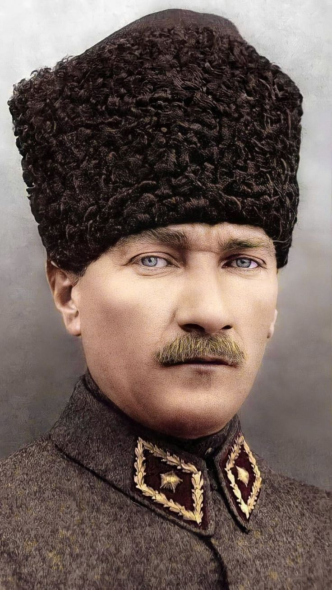
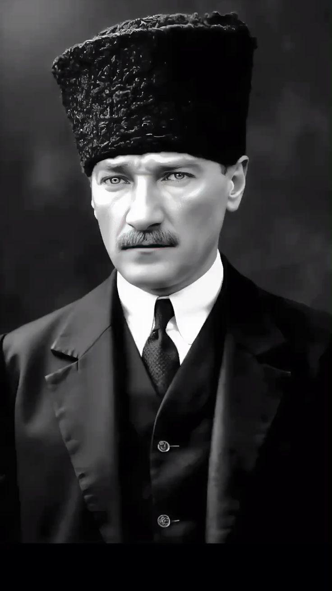
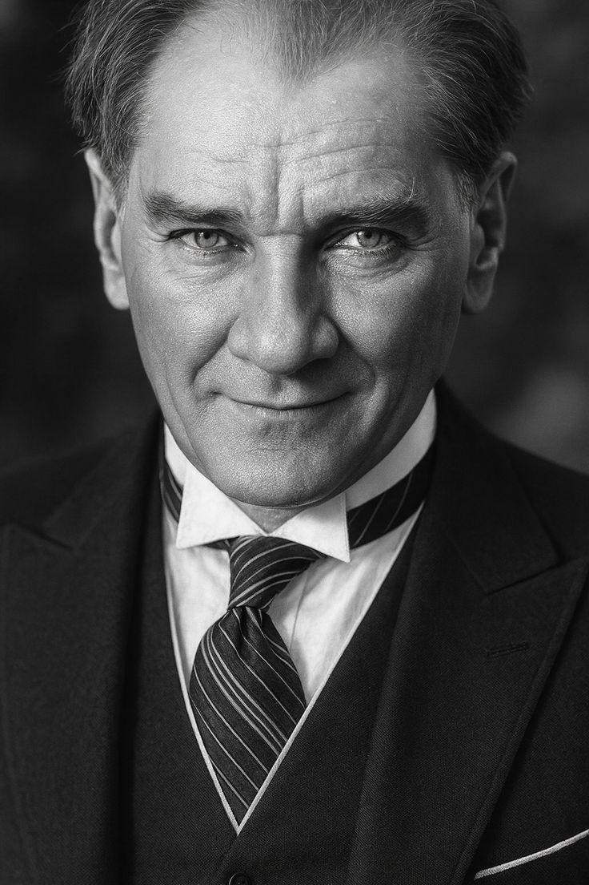
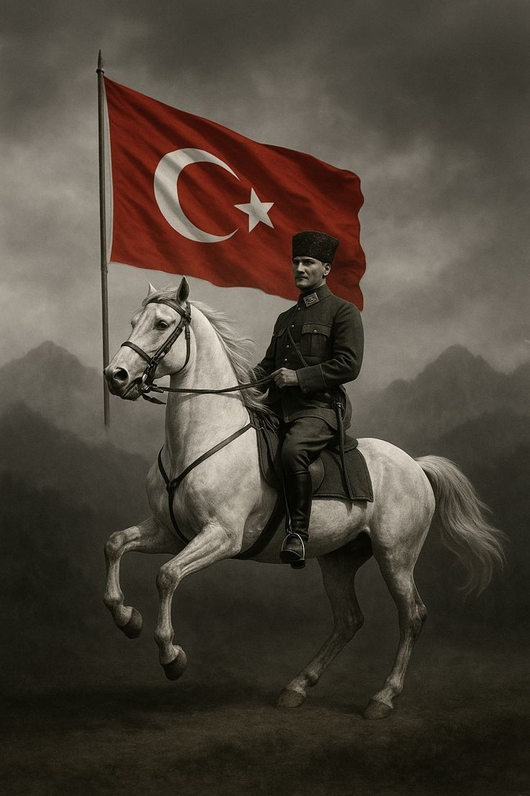

Ata'nın Işığı
EGEMENLİK KAYITSIZ ŞARTSIZ MİLLETİNDİR!







EGEMENLİK KAYITSIZ ŞARTSIZ MİLLETİNDİR!






Yükleniyor...
MUSTAFA KEMAL ATATÜRKSEFERİHİSARLI GENÇ BİZİMLE
Cumhuriyetin değerlerini savunan, Atatürk ilke ve inkılaplarını rehber edinen Seferihisar'ın lise gençliğiyiz. Geleceği inşa etmek için buradayız!
Egemenliğin tek kaynağının millet olduğu, liyakatin esas alındığı tam demokratik bir Türkiye idealini savunuyoruz.
Sınıf ve zümre ayrımı gözetmeksizin, ortak vatan idealinde birleşen her yurttaşı kucaklayan kapsayıcı bir aidiyet bağıdır.
Toplumsal adaletin sağlandığı, hiçbir gücün halkın üzerinde olmadığı, fırsat eşitliğinin her gencin hakkı olduğu bir düzen.
Ekonomik kalkınmanın halk yararına, stratejik kaynakların ise milletin geleceği için kamu gücüyle korunmasıdır.
Din ve devlet işlerinin ayrılmasıyla vicdan hürriyetini korumak, aklı ve bilimi devlet yönetiminde tek rehber kılmaktır.
Dogmalara hapsolmadan, çağın gereksinimlerine göre her zaman ileriye gitmek ve sürekli yenilenerek gelişmektir.
"Dünyada her şey kadının eseridir." — Mustafa Kemal Atatürk